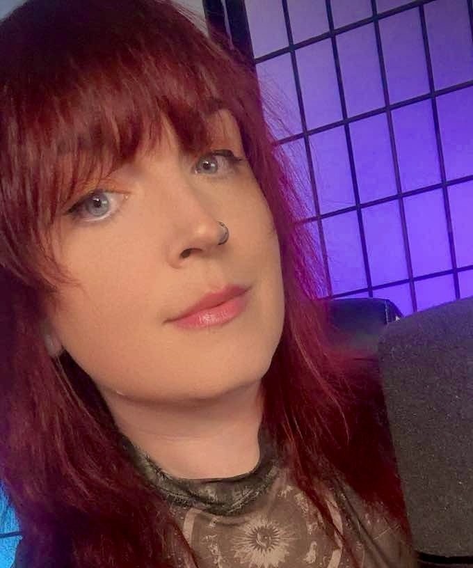

Founder · Head Storyteller · Creative Director
Kylie Rose
Kylie Rose is the founder, head storyteller, and the heart of Dicescape, a woman-led Actual Play Studio, dedicated to telling immersive stories across all genres and mediums. Kylie got her start in TTRPGs after film school, bridging the gap between her love of storytelling and bringing people to the table.